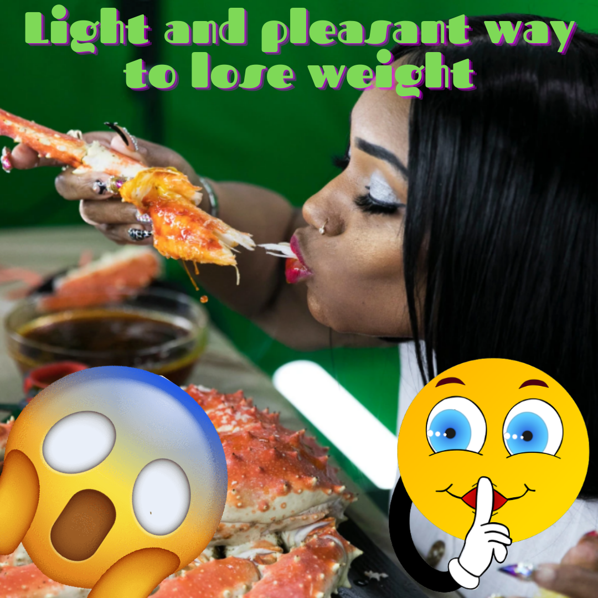
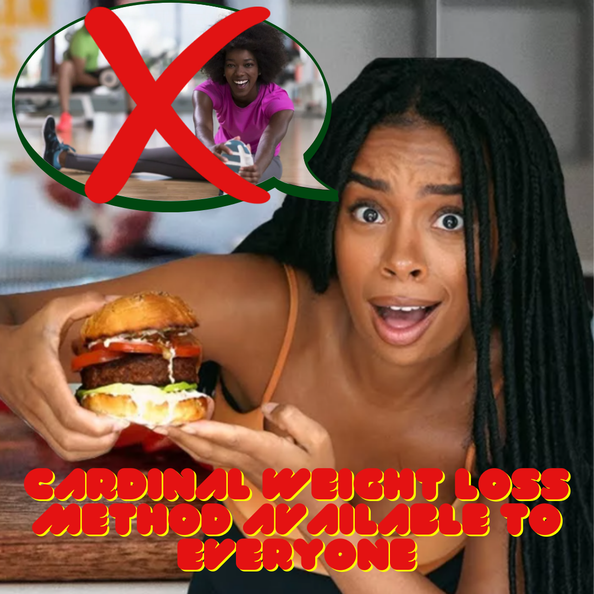

6 signs indicating excessive sugar consumption
If we consume too much sugar the body sends us unequivocal signals that it is good not to underestimate: dull skin, fatigue, caries, high blood sugar, hypertension and not only. Here are the obvious signs that you are eating too much sugar!
Read moreWhat supplements best help to lose weight?

Supplements for weight loss are one of the most commonly purchased means without a prescription. Some choose them consciously as a supplement to the treatment, leading to weight loss, others treat them as magic pills that will burn the accumulated fat without additional renunciations. However, do not trust the suggestive ads and do not let yourself be fooled by the shapely silhouettes on the packaging. Without a balanced, healthy diet and exercise, we will not achieve the desired effect. Supplements can only be used as an aid and this is what today's article will be about.
Read moreWeight loss training
Although the recipe for fat burning is simple, millions of people struggling with excess weight have not yet discovered it. Believe me, you also know this secret method!
Read more10 principles of healthy and proper nutrition
Proper nutrition: 10 golden rules
Nutrition is a very valuable health tool. To be able to define “correct”, it must be based on a diet (to be understood as a set of foods you eat regularly and not as a “diet”) that meets the following characteristics: healthy, well-balanced, varied, which provides for the introduction of all the food groups in the right proportions.
Read more